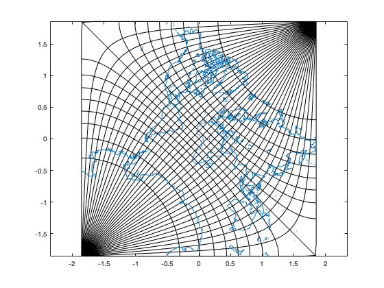

adamssquare2.m: Adams projection of the world in a square II
Author: Kelly Kearney
This repository includes the code for the adamssquare2.m Matlab function, along with all dependent functions required to run it.
This function converts lat/lon coordinates to the Adams projection of the world in a square II, assuming a spherical earth, based on the following publication:
Adams, O. S. (1929). Conformal Projection of the Sphere Within a Square. Washington: U.S. Coast and Geodetic Survey Special Publication 153.
This is a pretty obscure projection, and I wrote this for a very specific use case (replicating a Spilhaus ocean-centric map in Matlab), so no real attempt has been made to make this function even remotely as robust as the projections you'll find in the Mapping Toolbox or m_map.
This code is a direct translation of proj_guyou.c, which was part of release 3 of libproj4 (I think). Accessed from here on 2020/3/25.
Contents
Getting started
Prerequisites
This function should work in any version of Matlab.
Downloading and installation
This code can be downloaded from Github or the MatlabCentral File Exchange. The File Exchange entry is updated daily from the GitHub repository.
Matlab Search Path
The following folders need to be added to your Matlab Search path (via addpath, pathtool, etc.):
adamssquare2-pkg/adamssquare2
Syntax
[x,y] = adamssquare2(phi, lam)
Description
[x,y] = adamssquare2(phi, lam) calculates the projected coordinates x and y corresponding to the input coordinates phi and lam. phi can be a matrix of any size, with values ranging from -pi to pi, usually representing latitude converted to radians; the size of lam must match lon, with values ranging from 0 to 2*pi or -pi to pi, representing longtitude converted to radians.
Examples
For this example, we will plot continents with latitude and longitude gridlines.
% Coastlines L = shaperead('landareas.shp','UseGeoCoords',true); [xland,yland] = adamssquare2(deg2rad([L.Lat]), deg2rad([L.Lon])); % Parallel lines [ltpar,lnpar] = ndgrid(-90:10:90, -180:180); [xpar,ypar] = adamssquare2(deg2rad(ltpar), deg2rad(lnpar)); % Meridian lines [ltmer,lnmer] = ndgrid(-90:90, [-179.99 -170:10:170 179.99]); [xmer,ymer] = adamssquare2(deg2rad(ltmer), deg2rad(lnmer)); % Plot plot(xpar', ypar', 'k'); axis equal; hold on; plot(xmer, ymer, 'k'); plot(xland, yland);
Contributions
Community contributions to this package are welcome!
To report bugs, please submit an issue on GitHub and include:
- your operating system
- your version of Matlab and all relevant toolboxes (type ver at the Matlab command line to get this info)
- code/data to reproduce the error or buggy behavior, and the full text of any error messages received
Please also feel free to submit enhancement requests, or to send pull requests (via GitHub) for bug fixes or new features.
I do monitor the MatlabCentral FileExchange entry for any issues raised in the comments, but would prefer to track issues on GitHub.